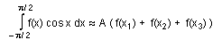
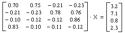
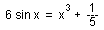
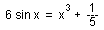

Numericka matematika
okt-nov. '97.
asistent: Milan Drazic
1. Za funkciju  odrediti
maksimalan korak h koji na intervalu [-1, 2] garantuje tacnost kvadratne
interpolacije
odrediti
maksimalan korak h koji na intervalu [-1, 2] garantuje tacnost kvadratne
interpolacije  .
(Izvesti formulu za optimalan korak.)
.
(Izvesti formulu za optimalan korak.)
2. Izvesti kvadraturnu formulu oblika: 
3. Metodom proste iteracije resiti sistem, racunajuci sa 5 decimala

4. Metodom Newtona sa tacnoscu  naci
sva pozitivna resenja jednacine: 
naci
sva pozitivna resenja jednacine: 